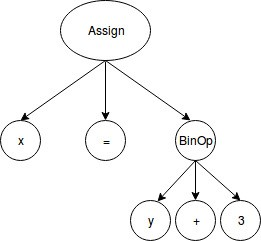

Programfejlesztes Scalaban
Generativ programozas
Mai temak
Scalac
Makrok
Compiler pluginek
Compiler infrastruktura
Scalac
Tobbfazisu compiler (de csak egymenetes)
Parse-olas utan egy AST-t epit
AST: Abstract Syntax Tree
A fazisok az AST-t vizsgaljak es transzformaljak
Maga a compiler es az AST is Scala kod es std lib-et hasznal
Elonyok: ismeros, konnyen modosithato
Hatranyok: nem trivialis reprezentacio, lehetne gyorsabb is
Scala AST tipushierarchia
Compiler fazisok
scalac -Xshow-phases
phase name id description
---------- -- -----------
parser 1 parse source into ASTs, perform simple desugaring
namer 2 resolve names, attach symbols to named trees
packageobjects 3 load package objects
typer 4 the meat and potatoes: type the trees
patmat 5 translate match expressions
superaccessors 6 add super accessors in traits and nested classes
extmethods 7 add extension methods for inline classes
pickler 8 serialize symbol tables
refchecks 9 reference/override checking, translate nested objects
uncurry 10 uncurry, translate function values to anonymous classes
fields 11 synthesize accessors and fields, add bitmaps for lazy vals
tailcalls 12 replace tail calls by jumps
specialize 13 @specialized-driven class and method specialization
explicitouter 14 this refs to outer pointers
erasure 15 erase types, add interfaces for traits
posterasure 16 clean up erased inline classes
lambdalift 17 move nested functions to top level
constructors 18 move field definitions into constructors
flatten 19 eliminate inner classes
mixin 20 mixin composition
cleanup 21 platform-specific cleanups, generate reflective calls
delambdafy 22 remove lambdas
jvm 23 generate JVM bytecode
terminal 24 the last phase during a compilation runMakrok
A makrok a Scala metaprogramozas legyegyszerubb eszkozei
Scala kod, ami forditasi idoben Scala kodot general
Nem keverendo ossze a C preprocesszor makrokkal (=egyszeru szoveghelyettesites)
A makro AST-bol AST-t keszit
Megkapja a compiler aktualis allapotat
Amikor a typer egy makro hivast talal, lefuttatja a makro kodjat
A makro altal generalt AST-t a hivas pontos helyere illeszti
Majd lefuttatja az uj AST-re is a typert
Megszoritas: tipushelyes AST-t kell generalnunk
A kimeno AST lehet ugyanaz, mint a bemeno: vegezhetunk ellenorzeseket is csupan
A makro definicioja es a felhaszanalasa lehet ugyanabban a forditasi egysegben
Makro pelda
<dependency>
<groupId>org.scala-lang</groupId>
<artifactId>scala-reflect</artifactId>
<version>2.12.4</version>
</dependency>import scala.reflect.macros.blackbox
object Macros {
// A macro kulcsszo hasznalata jelzi a compilernek: itt trukkozunk
def hello: Unit = macro helloImpl
// A macro implementacioja mindig kulon van definialva
// A c itt a compiler context
// A generalt AST most Unit tipusu
def helloImpl(c: blackbox.Context): c.Expr[Unit] = {
// A context path-dependent dolgai
import c.universe._
// A q""" egy quasiquote - ezekrol kesobb
c.Expr(q"""println("hello!")""")
}
}import Macros.hello
def usingMyMacro(): {
...
hello // Ez a szimbolum lesz attranszformalva
...
}Makrok fajtai
A makrok altal generalt AST korabban megorizte a visszateresi tipust statikusan
Ez igy nem biztos, hogy jo: specifikusabb tipussal terunk vissza, es az "ugy is marad", tehat nem elvart
Blackbox vs whitebox makrok
Blackbox: pont ugy viselkedik, mint egy sima def: a visszateresi tipusu AST-vel ter vissza
A mukodesuk megertesehez nincs szukseg az implementaciora
Whitebox: nincs feltetlenul pontos szignaturajuk Scalaban
Ez hogyan fordulhat elo? Pl. conditional types
Ez a korabbi mukodes: nincs megkotes a visszateresi tipusra
Mindketto fontos lehet, de: blackbox trivialisabb, konnyebben irhato, ertheto, tamogathato
AST generalasa
Kezzel: letrehozzuk a fat a megfelelo tipusok alkalmazasasaval
c.Expr {
Apply(
Ident(TermName("println")),
List(
Apply(
Select(
Apply(
Select(
Literal(Constant("hello ")),
TermName("$plus")
),
List(
s.tree
)
),
TermName("$plus")
),
List(
Literal(Constant("!"))
)
)
)
)
}Keves embernek esik ez jol
AST generalasa
Quasiquote-ok
Van valami infrastrukturank, amit tud szovegbol AST-t kesziteni: a parser!
Ha mar van, hasznaljuk
// Ez ugyanaz az AST lesz, mint az elozo dian
q"""println("hello " + ${s.tree} + "!")"""
A tree reprezentacio kiirasa
showRaw(q"""println("hello " + ${s.tree} + "!")""")AST generalasa
Reify es splice
Ez is egy makro; jon a compilerrel
reify: kodblokk -> AST
splice: AST -> kodblokk (csak reify blokkon belul mukodik)
// Ez ugyanaz az AST lesz, mint az elozo diakon
reify {
println(s"hello ${s.splice}!")
}
Itt valodi Scala kodot irunk (a makro forditasakor ellenorzi a compiler)
Konnyebb helyes kodot irni, cserebe kenyelmetlenebb, mint a quasiquote
Makro pelda parameterrel
import scala.reflect.macros.blackbox
object Macros {
def hello(s: String): Unit = macro helloImpl
// A makronk masodik parameterlistaja az, ami "exposalva" van a hasznalatra
// A bejovo AST tipusa egy String tipusu kifejezes
// Ezt persze kiertekelni nem tudjuk itt - ahhoz a runtime minden informaciojara szukseg lenne
def helloImpl(c: blackbox.Context)(s: c.Expr[String]): c.Expr[Unit] = {
import c.universe._
c.Expr(q"""println("hello " + ${s.tree} + "!")""")
}
}import Macros.hello
def usingMyMacro(): {
...
hello("Scala") // Ez a szimbolum lesz attranszformalva
...
}Makro bundle
Eddig mindig csak egyszeru def-eket hasznaltunk makrokent
Trivialis esetkben jol mukodik
Bonyolultabb helyzetben jo lenne tobb defet hasznalni
Enkapszulacio, ujrafelhasznalas, stb.
import scala.reflect.macros.blackbox.Context
class Impl(val c: Context) {
def hello(s: c.Expr[String]): c.Expr[Unit] = {
import c.universe._
c.Expr(q"""println("hello " + ${s.tree} + "!")""")
}
}
object Macros {
def hello(s: String): Unit = macro Impl.helloImpl
}Makro bundle: egy osztaly, aminek az egyetlen konstruktora egy contextet fogad el
Ide tudjuk tenni a makro implementaciokat + az osszes utilityt, amire szuksegunk van
Generikus makrok
Egy makro lehet generikus
Ebben az esetben az applikacio helyen kotelezo explicite megadni a tipusokat
A pontos tipusinformacio megorzese erdekeben nem art TypeTag-et kerni a parameterekre (context bounds)
WeakTypeTag: ez mindig a leheto legkonkretabb tipust fogja leirni
class Queryable[T] {
def map[U](p: T => U): Queryable[U] = macro QImpl.map[T, U]
}
object QImpl {
def map[T: c.WeakTypeTag, U: c.WeakTypeTag]
(c: Context)
(p: c.Expr[T => U]): c.Expr[Queryable[U]] = ...
}Makro praktikak
-Ymacro-debug-lite: kiirja a macro expansion helyet, eredmenyet nyers Tree-kent es pszeudo-Scala kodkent
Nem kezelt exceptionok: stacktrace kiirasa, de ez nem tul elegans
Compiler kimenete hibak es figyelmeztetesek hasznalatara
c.abort(c.enclosingPosition, "macro error")
c.error(c.enclosingPosition, "macro compiler error")
c.warning(c.enclosingPosition, "macro warning")Compiler pluginek
A scalac lehetoseget ad sajat compiler phase irasara
Barmelyik phase utan futtathatjuk a pluginunket (akar tobb utan is)
Hasonlo a makrokhoz: AST -> AST, de sokkal heavyweightebb
Implementalhatunk benne olyan dolgokat, amik makroban nem lehetsegesek
Lehetnek opcioi, amit a compileren keresztul passzolunk at
Kulon forditasi egyseg, mint a felhasznalasa: JAR-t kell kesziteni belole
Osszetevok: plugin kod, plugin komponens (definialja, hogyan es mikor fut), opcionalis opciok, metaadat (XML)
Plugin es komponens kod
package elte.scalacourse
import scala.tools.nsc
import nsc.Global
import nsc.Phase
import nsc.plugins.Plugin
import nsc.plugins.PluginComponent
class DivByZero(val global: Global) extends Plugin {
// A global a compiler globalis allapota
import global._
// A pluginunk leirasa
val name = "divbyzero"
val description = "checks for division by zero"
val components = List[PluginComponent](Component)
// A komponens object
private object Component extends PluginComponent {
// A global kiemelese valla
val global: DivByZero.this.global.type = DivByZero.this.global
// A lista a phase-ekrol, amik utan futni fog (lehet meg runsBefore es runsRightAfter is)
val runsAfter = List[String]("refchecks")
// A mi phase-unk neve
val phaseName = DivByZero.this.name
// A phase factoryja
def newPhase(_prev: Phase) = new DivByZeroPhase(_prev)
// A phase kodja
class DivByZeroPhase(prev: Phase) extends StdPhase(prev) {
// A nev ujra
override def name = DivByZero.this.name
// A plugin logika
// CompilationUnit: egy legfelso-szintu class/trait/object
def apply(unit: CompilationUnit): Unit = {
// unit.body: a CU AST-je (beletartozik a definicio is, tehat pl. class)
// Apply(Select(rcvr, nme.DIV), List(Literal(Constant(0)))) == rcvr.DIV(0)
// rcvr.tpe <:< definitions.IntClass.tpe == ha a rcvr tipusa kisebb-egyenlo, mint az Int
for ( tree @ Apply(Select(rcvr, nme.DIV), List(Literal(Constant(0)))) <- unit.body
if rcvr.tpe <:< definitions.IntClass.tpe)
{
// Dobjunk compilation hibat
global.reporter.error(tree.pos, "definitely division by zero")
}
}
}
}
}Plugin hasznalata
scalac-plugin.xml
<plugin>
<name>divbyzero</name>
<classname>elte.scalacourse.DivByZero</classname>
</plugin>Keszitenunk kell belole egy JARt
mkdir classes
scalac -d classes Plugin.scala
cp scalac-plugin.xml classes
(cd classes; jar cf ../divbyzero.jar .)Meg kell adnunk a compilernek a JAR eleresi utjat
scalac -Xplugin:divbyzero.jar Test.scalaCompiler plugin megfontolasok
Legtobbszor nincs rajuk szukseg: sima Scala kod elegendo, de ha nem, meg mindig ott vannak a makrok
Quasiquote-ok elerhetoek itt is
-Ybrowse:<phases>: A
scala -Y: Az osszes -Y opcio
Compiler infrastruktura
Toolbox API: Scala kodbol meghivhato, ami on-the-fly bytecode-ot general
Quasiquote-ok hasznalhatoak itt is (akar meg a REPL-ben is)
Egy meghivhato fuggvenyt kapunk vissza
A String closure-e elerheto
scala> val code = q"""println("compiled and run at runtime!")"""
scala> val compiledCode = toolbox.compile(code)
scala> val result = compiledCode()
compiled and run at runtime!
result: Any = ()Minden hivasnal ujra letrehoz egy compiler contextet: 2-3s minden hivas => probaljunk batchelni
Feladat
Irjunk ki-be kapcsolhato assert-makrot! Legyen egy globalis flag, amivel az asserteket futtatjuk. Az assert hivas nezzen igy ki: assert(<Boolean kifejezes>, <Uzenet, ha a kifejezes false>). Az uzenet dobodjon mint egy AssertionError kivetel, es tartalmazza a kifejezes kodjat is.